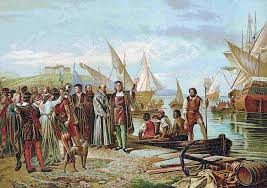

The Age of Exploration
Period: 1400s – 1700s
The Age of Exploration was a transformative era when European explorers set out across the oceans in search of new trade routes, wealth, and knowledge. This period led to the discovery of new continents, global cultural exchange, and major advancements in navigation and cartography. It reshaped world history through exploration, colonization, and the first truly global interactions.
Type: Global Exploration Era